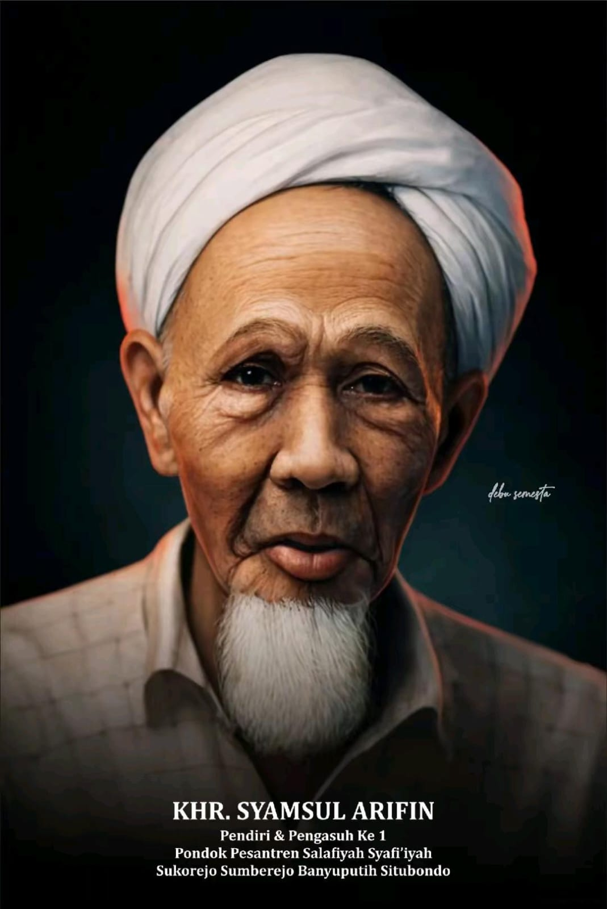

KHR. Syamsul Arifin
Pendiri dan Pengasuh I
Berjuang Bersama • Mengabdi Tanpa Batas
Rumah besar santri dan alumni Salafiyah Syafi’iyah
dalam khidmah, dakwah, dan keberlanjutan perjuangan pesantren.
Website ini dikelola oleh @dibawahnaunganiksass yang memuat berita, agenda, dan aktivitas Ikatan Santri Alumni Salafiyah Syafi’iyah sebagai bagian dari khidmah dan kesinambungan perjuangan pesantren. Pelajari Selengkapnya →
Estafet Kepengasuhan
Sosok pendiri dan para pengasuh Pesantren Salafiyah Syafi’iyah Sukorejo yang menjaga sanad, nilai, dan kesinambungan perjuangan pesantren.
—
Publikasi Berita
—
Halaman Kelembagaan
—
Halaman Profil
—
Dokumen & Panduan
Angka-angka ini diperbarui otomatis dari indeks data situs.
Arah kerja nyata IKSASS—dirancang untuk memperkuat alumni dan memperluas khidmah.
Struktur organisasi dari pusat hingga rayon—agar gerak khidmah lebih terarah.
Potongan kisah singkat—tentang perjuangan bersama, dan khidmah tanpa batas.
Informasi terbaru kegiatan dan perkembangan IKSASS.
Rumah besar santri dan alumni Salafiyah Syafi’iyah.
IKSASS merupakan wadah khidmah untuk meneguhkan tekad, merawat, dan meneruskan perjuangan pesantren melalui gerakan alumni yang terstruktur dan berkesinambungan.
Satu Dawuh, Satu Komando
Bersama pesantren dan pengasuh.
Beberapa pertanyaan berikut disusun untuk memberikan pemahaman awal mengenai IKSASS dan nilai-nilai yang melandasinya.
IKSASS (Ikatan Santri dan Alumni Salafiyah Syafi’iyah) merupakan organisasi yang menghimpun santri dan alumni Pondok Pesantren Salafiyah Syafi’iyah Sukorejo. Organisasi ini berperan sebagai wadah silaturahim, penguatan nilai pesantren, serta pengabdian kepada masyarakat dalam berbagai bidang keagamaan, sosial, dan pendidikan.
“Mondhuk entar ngabdi ben ngaji” adalah semboyan khas pesantren yang menegaskan bahwa proses menuntut ilmu (ngaji) dan pengabdian kepada kiai serta pesantren (ngabdi) merupakan dua aspek yang tidak terpisahkan. Prinsip ini menjadi landasan pembentukan karakter santri yang berakhlak, disiplin, dan berorientasi pada keberkahan ilmu.
Struktur organisasi IKSASS tersusun secara berjenjang, mulai dari tingkat pusat hingga rayon dan komisariat di berbagai daerah. Sistem ini dirancang untuk menjaga kesinambungan program, memperkuat koordinasi, serta memastikan pelaksanaan kegiatan berjalan secara tertib dan terarah.
Santri dan alumni dapat berpartisipasi melalui kegiatan kelembagaan, program sosial-keagamaan, pendidikan, maupun aktivitas dakwah yang diselenggarakan oleh IKSASS. Informasi lebih lanjut dapat diperoleh melalui pengurus setempat atau melalui halaman kontak resmi organisasi.
Masih memiliki pertanyaan lain?
Hubungi KamiIKSASS